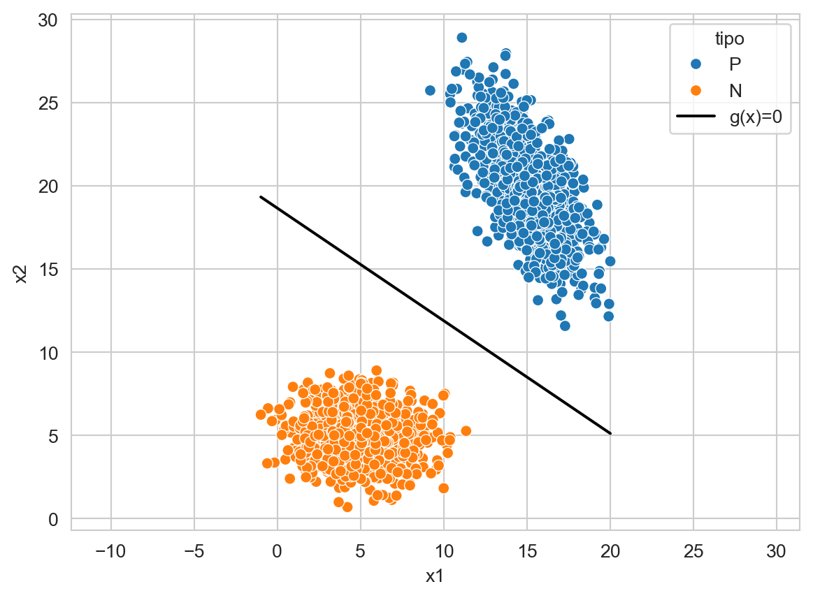
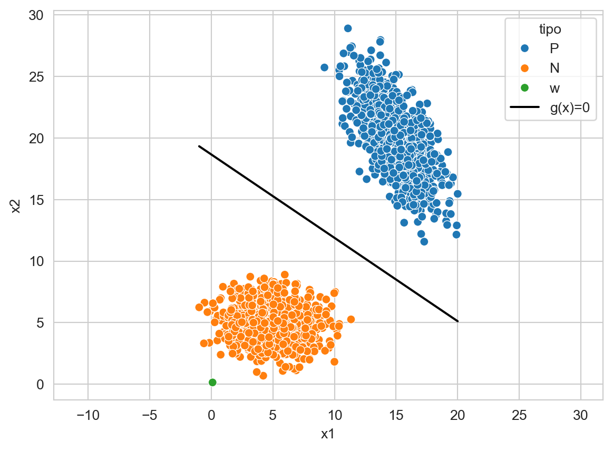
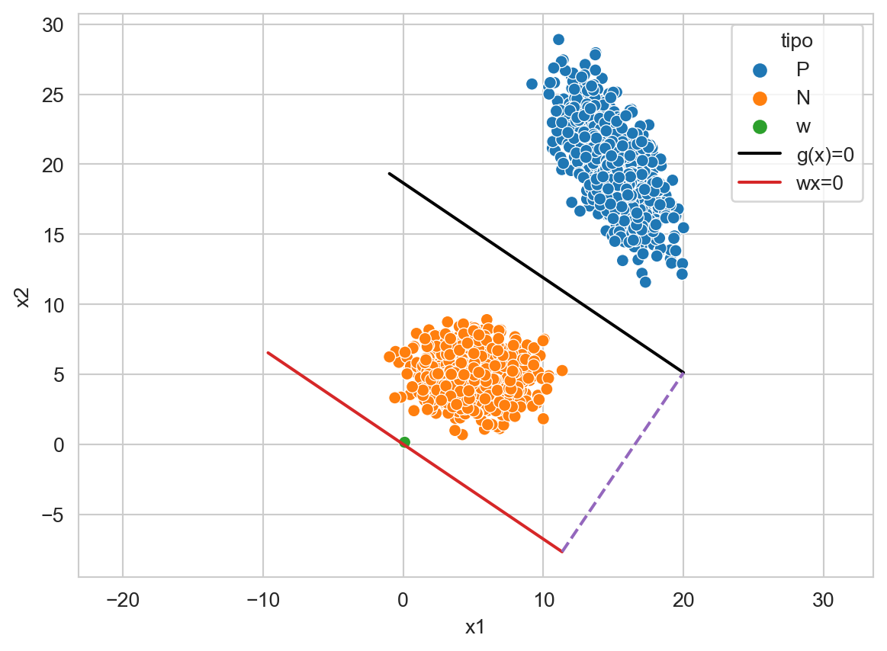
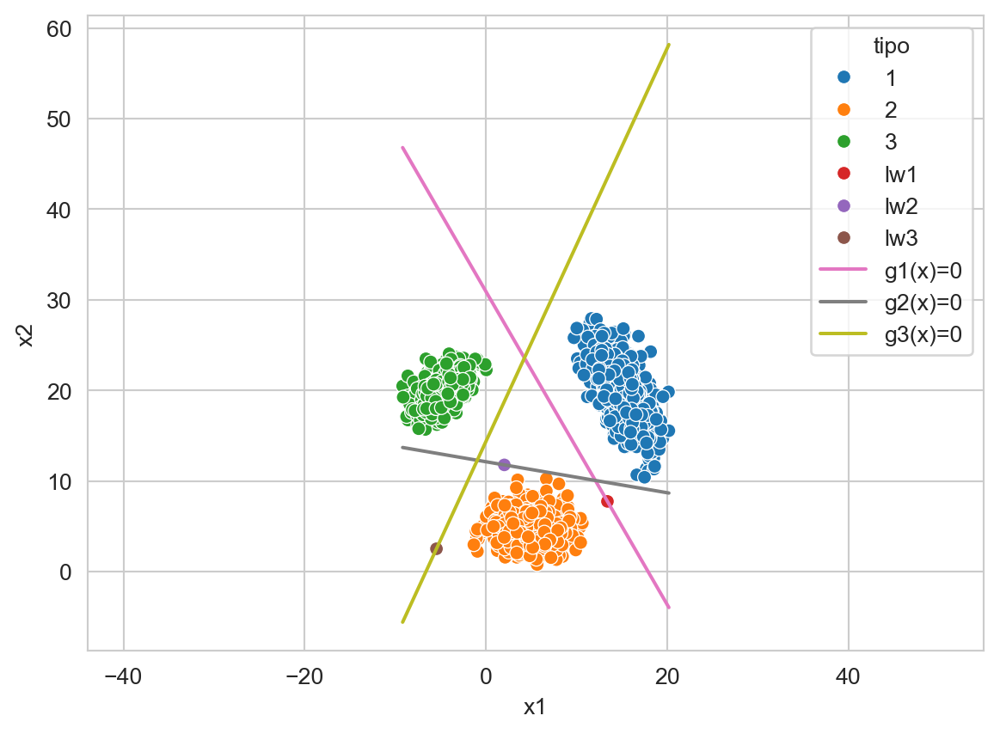
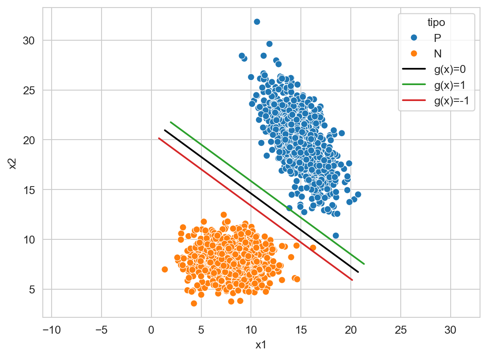
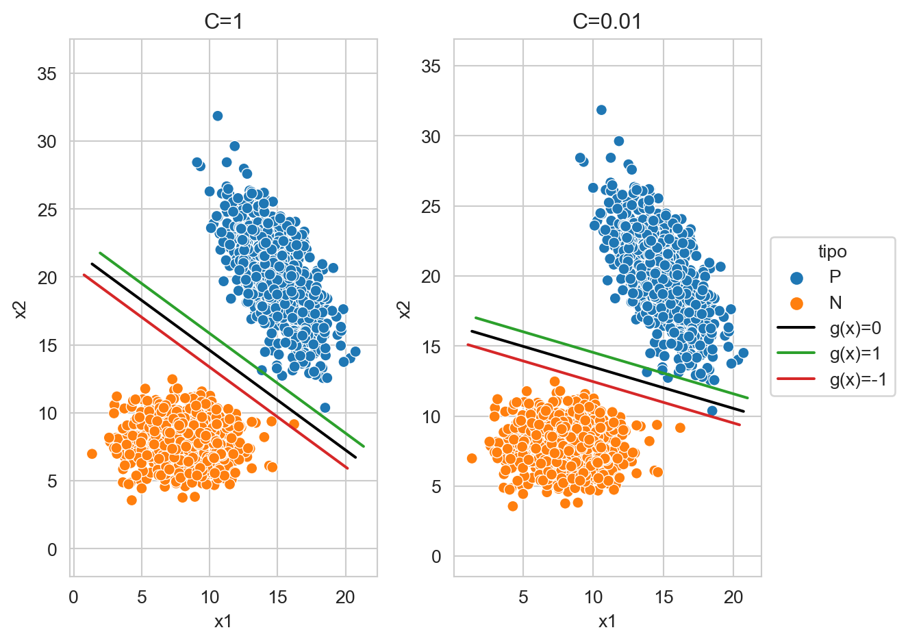
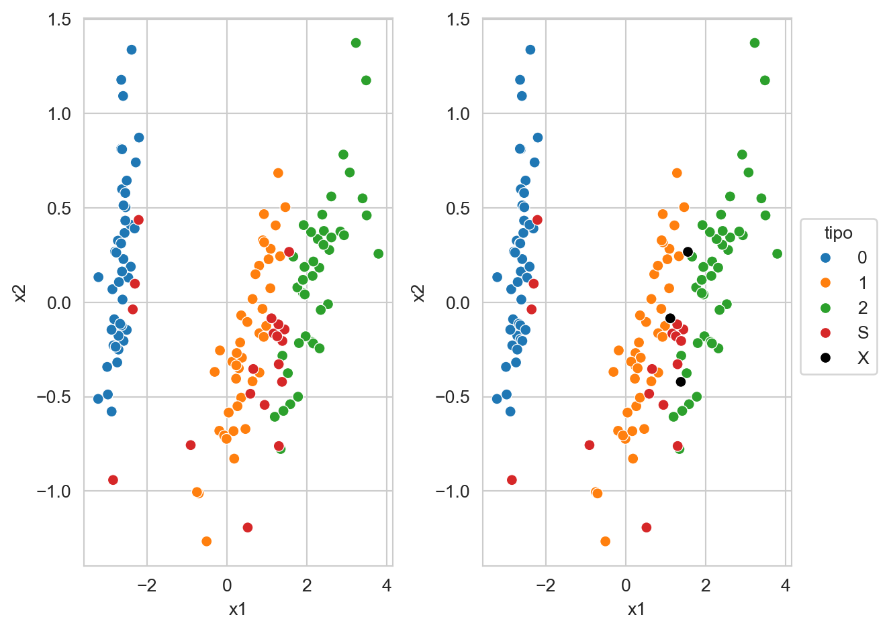
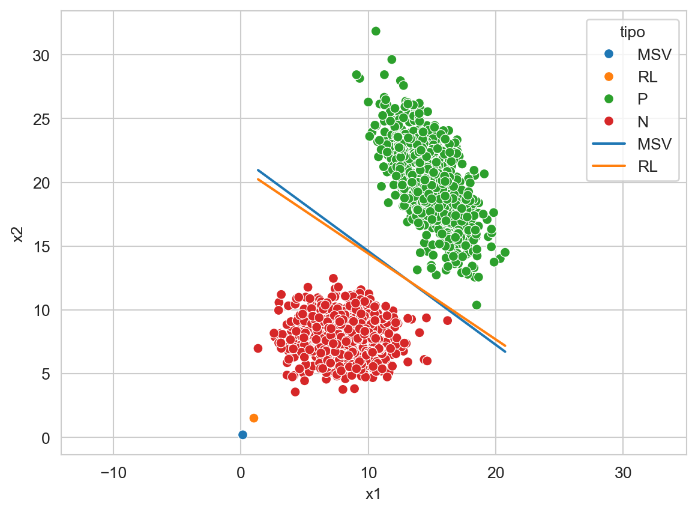

from sklearn.svm import LinearSVC, SVC
from sklearn.linear_model import LogisticRegression
from sklearn.decomposition import PCA
from sklearn.model_selection import train_test_split
from sklearn.metrics import f1_score, recall_score, precision_score
from scipy.stats import multivariate_normal
from sklearn.datasets import load_iris
from matplotlib import pylab as plt
import numpy as np
import pandas as pd
import seaborn as sns9 Discriminantes Lineales
El objetivo de la unidad es conocer y aplicar diferentes métodos lineales de discriminación para atacar problemas de clasificación.
9.1 Paquetes usados
9.2 Introducción
En unidades anteriores se han visto diferentes técnicas para discriminar entre clases; en particular se ha descrito el uso de la probabilidad \(\mathbb P(\mathcal Y \mid \mathcal X)\) para encontrar la clase más probable. Los parámetros de \(\mathbb P(\mathcal Y \mid \mathcal X)\) se han estimado utilizando métodos paramétricos y no paramétricos. En está unidad se describe el uso de funciones discriminantes para la clasificación y su similitud con el uso de \(\mathbb P(\mathcal Y \mid \mathcal X).\)
9.3 Función Discriminante
En la unidad de Teoría de Decisión Bayesiana (Capítulo 2) se describió el uso de \(\mathbb P(\mathcal Y \mid \mathcal X)\) para clasificar, se mencionó que la clase a la que pertenece \(\mathcal X=x\) es la de mayor probabilidad, es decir,
\[ C(x) = \textsf{argmax}_{k=1}^K \mathbb P(\mathcal Y=k \mid \mathcal X=x), \]
donde \(K\) es el número de clases y \(\mathcal Y=k\) representa la \(k\)-ésima clase. Considerando que la evidencia es un factor que normaliza, entonces, \(C(x)\) se puede definir de la siguiente manera.
\[ C(x) = \textsf{argmax}_{k=1}^K \mathbb P(\mathcal X=x \mid \mathcal Y=k)\mathbb P(\mathcal Y=k). \]
Agrupando la probabilidad a priori y verosimilitud en una función \(g_k,\) es decir, \(g_k(x) = P(\mathcal X=x \mid \mathcal Y=k)\mathbb P(\mathcal Y=k),\) hace que \(C(x)\) se sea:
\[ C(x) = \textsf{argmax}_{k=1}^K g_k(x). \]
Observando \(C(x)\) y olvidando los pasos utilizados para derivarla, uno se puede imaginar que lo único necesario para generar un clasificador de \(K\) clases es definir un conjunto de functions \(g_k\) que separen las clases correctamente. En esta unidad se presentan diferentes maneras para definir \(g_k\) con la característica de que todas ellas son lineales, e.g., \(g_k(\mathbf x) = \mathbf w_k \cdot \mathbf x + w_{k_0}.\)
9.3.1 Clasificación Binaria
La descripción de discriminantes lineales empieza con el caso particular de dos clases, i.e., \(K=2\). En este caso \(C(\mathbf x)\) es encontrar el máximo de las dos funciones \(g_1\) y \(g_2\). Una manear equivalente sería definir a \(C(\mathbf x)\) como
\[ C(\mathbf x) = \textsf{sign}(g_1(\mathbf x) - g_2(\mathbf x)), \]
donde \(\textsf{sign}\) es la función que regresa el signo, entonces solo queda asociar el signo positivo a la clase 1 y el negativo a la clase 2. Utilizando esta definición se observa lo siguiente
\[ \begin{split} g_1(\mathbf x) - g_2(\mathbf x) &= (\mathbf w_1 \cdot \mathbf x + w_{1_0}) - (\mathbf w_2 \cdot \mathbf x + w_{2_0}) \\ &= (\mathbf w_1 + \mathbf w_2) \cdot \mathbf x + (w_{1_0} - w_{2_0}) \\ &= \mathbf w \cdot \mathbf x + w_0 \end{split}, \]
donde se concluye que para el caso binario es necesario definir solamente una función discriminante y que los parámetros de esta función son \(\mathbf w\) y \(\mathbf w_0.\) Otra característica que se ilustra es que el parámetro \(\mathbf w_0\) está actuando como un umbral, es decir, \(\mathbf x\) corresponde a la clase positiva si \(\mathbf w \cdot \mathbf x > -w_0.\)
En la Figura 9.1 se observa el plano (linea) que divide las dos clases, este plano representa los puntos que satisfacen \(g(\mathbf x)=0\).
Código
X_1 = multivariate_normal(mean=[15, 20],
seed=0,
cov=[[3, -3], [-3, 8]]).rvs(1000)
X_2 = multivariate_normal(mean=[5, 5],
seed=0,
cov=[[4, 0], [0, 2]]).rvs(1000)
T = np.concatenate((X_1, X_2))
y_t = np.array(['P'] * X_1.shape[0] + ['N'] * X_2.shape[0])
linear = LinearSVC(dual=False).fit(T, y_t)
w_1, w_2 = linear.coef_[0]
w_0 = linear.intercept_[0]
g_0 = [dict(x1=x, x2=y, tipo='g(x)=0')
for x, y in zip(T[:, 0], (-w_0 - w_1 * T[:, 0]) / w_2)]
df = pd.DataFrame(g_0 + \
[dict(x1=x, x2=y, clase='P') for x, y in X_1] + \
[dict(x1=x, x2=y, clase='N') for x, y in X_2]
)
ax = sns.scatterplot(data=df, x='x1', y='x2', hue='clase', legend=True)
sns.lineplot(data=df, x='x1', y='x2', ax=ax, hue='tipo', palette=['k'], legend=True)
_ = ax.axis('equal')

9.3.2 Geometría de la Función de Decisión
La función discriminante \(g(\mathbf x) = \mathbf w \cdot \mathbf x + w_0\) tiene una representación gráfica. Lo primero que se observa es que los parámetros \(\mathbf w\) viven en al mismo espacio que los datos, tal y como se puede observar en la Figura 9.2.
Código
_ = pd.DataFrame([dict(x1=w_1, x2=w_2, clase='w')])
df = pd.concat((df, _), axis=0)
ax = sns.scatterplot(data=df, x='x1', y='x2', hue='clase', legend=True)
sns.lineplot(data=df, x='x1', y='x2', ax=ax, hue='tipo', palette=['k'], legend=True)
_ = ax.axis('equal')

Siguiendo con la descripción, los parámetros \(\mathbf w\) y la función \(g(\mathbf x)\) son ortogonales, tal y como se muestra en la Figura 9.3. Analiticamente la ortogonalidad se define de la siguiente manera. Sea \(\mathbf x_a\) y \(\mathbf x_b\) dos puntos en \(g(\mathbf x)=0\), es decir,
\[ \begin{split} g(\mathbf x_a) &= g(\mathbf x_b) \\ \mathbf w \cdot \mathbf x_a + w_0 &= \mathbf w \cdot \mathbf x_b + w_0\\ \mathbf w \cdot (\mathbf x_a - \mathbf x_b) &= 0, \end{split} \]
donde el vector \(\mathbf x_a - \mathbf x_b\) es paralelo a \(g(\mathbf x)=0\), ortogonal a \(\mathbf w\) y el sub-espacio generado por \(\mathbf w \cdot (\mathbf x_a - \mathbf x_b) = 0\) pasa por el origen.
Código
w = np.array([w_1, w_2]) / np.linalg.norm([w_1, w_2])
len_0 = w_0 / np.linalg.norm([w_1, w_2])
df = pd.DataFrame(g_0 + \
[dict(x1=x, x2=y, clase='P') for x, y in X_1] + \
[dict(x1=x, x2=y, clase='N') for x, y in X_2] + \
[dict(x1=0, x2=0, tipo='lw'),
dict(x1=-w[0]*len_0, x2=-w[1]*len_0, tipo='lw')]
)
ax = sns.scatterplot(data=df, x='x1', y='x2', hue='clase', legend=True)
sns.lineplot(data=df, x='x1', y='x2', ax=ax, hue='tipo',
palette=['k'] + sns.color_palette()[2:3],
legend=True)
_ = ax.axis('equal')En la figura anterior, \(\ell \mathbf w\) corresponde al vector \(\mathbf w\) multiplicado por un factor \(\ell\) de tal manera que intersecte con \(g(\mathbf x)=0.\) El factor \(\ell\) corresponde a la distancia que hay del origen a \(g(\mathbf x)=0\) la cual es \(\ell = \frac{w_0}{\mid\mid \mathbf w \mid\mid}.\) El signo de \(\ell\) indica el lado donde se encuentra el origen con respecto a \(g(\mathbf x)=0.\)
La Figura 9.4 muestra en rojo la línea generada por \(\mathbf w \cdot \mathbf x=0\), la función discriminante \(g(\mathbf x)=0\) (negro), la línea puntuada muestra la distancia entre ellas, que corresponde a \(\ell\) y el vector \(\mathbf w\). Visualmente, se observa que \(\mathbf w\) está pegado a la línea roja, pero esto solo es un efecto de la resolución y estos elementos no se tocan.
Código
vec = np.array([1, (- w_1 * 1) / w_2])
x_max = T[:, 0].max()
length = np.linalg.norm(np.array([x_max, (-w_0 - w_1 * x_max) / w_2]) -
np.array([-w[0]*len_0, -w[1]*len_0]))
vec_der = length * vec / np.linalg.norm(vec)
x_min = T[:, 0].min()
length = np.linalg.norm(np.array([x_min, (-w_0 - w_1 * x_min) / w_2]) -
np.array([-w[0]*len_0, -w[1]*len_0]))
vec_izq = -length * vec / np.linalg.norm(vec)
g = [dict(x1=x, x2=(- w_1 * x) / w_2, tipo='wx=0')
for x in np.linspace(vec_izq[0], vec_der[0])]
df = pd.DataFrame([dict(x1=x, x2=y, clase='P') for x, y in X_1] + \
[dict(x1=x, x2=y, clase='N') for x, y in X_2] +\
[dict(x1=w_1, x2=w_2, clase='w')] +\
g_0 + g)
ax = sns.scatterplot(data=df, x='x1', y='x2', hue='clase', legend=True)
sns.lineplot(data=df, x='x1', y='x2', ax=ax, hue='tipo',
palette=['k'] + sns.color_palette()[3:4],
legend=True)
ax.plot([vec_der[0], x_max], [vec_der[1], (-w_0 - w_1 * x_max) / w_2], '--',
color=sns.color_palette()[4])
_ = ax.axis('equal')

Finalmente, será de utilidad representar a cada punto en \(\mathcal D\) de la siguiente manera
\[ \mathbf x = \mathbf x_g + \ell \frac{\mathbf w}{\mid\mid \mathbf w \mid\mid}, \]
donde \(\mathbf x_g\) corresponde a la proyección en el hiperplano (\(g(\mathbf x) = 0\)) de \(\mathbf x\) y \(\ell\) es la distancia que hay del hiperplano a \(\mathbf x\). Utilizando esta representación se puede derivar la distancia \(\ell\) de \(\mathbf x\) con el siguiente procedimiento.
\[ \begin{split} g(\mathbf x) &= g(\mathbf x_g + \ell \frac{\mathbf w}{\mid\mid \mathbf w \mid\mid})\\ &= \mathbf w \cdot (\mathbf x_g + \ell \frac{\mathbf w}{\mid\mid \mathbf w \mid\mid}) + w_0\\ &= \mathbf w \cdot (\mathbf x_g + \ell \frac{\mathbf w}{\mid\mid \mathbf w \mid\mid})\\ &= \mathbf w \cdot \mathbf x_g + \ell \mathbf w \cdot \frac{\mathbf w}{\mid\mid \mathbf w \mid\mid}\\ &= \ell \mathbf w \cdot \frac{\mathbf w}{\mid\mid \mathbf w \mid\mid}\\ &= \ell \mid\mid\mathbf w\mid\mid\\ \ell &= \frac{g(\mathbf x)}{\mid\mid\mathbf w \mid\mid} \end{split} \tag{9.1}\]
Como ya se había visto la distancia del origen al hiperplano está dada por \(\ell_0 = \frac{w_0}{\mid\mid\mathbf w \mid\mid}\) y de cualquier elemento por \(\ell_{\mathbf x} = \frac{g(\mathbf x)}{\mid\mid\mathbf w \mid\mid}.\) La Figura 9.5 muestra la \(\ell_{\mathbf x}\) en un elemento de la clase negativa. Se puede observar el punto \(\mathbf x_g\) que es donde intersecta la línea con el hiperplano.
Código
point = X_2[X_2.argmax(axis=0)[1]]
point_g = vec * np.dot(point, vec) / np.dot(vec, vec) - len_0 * w
df = pd.DataFrame(g_0 + \
[dict(x1=x, x2=y, clase='P') for x, y in X_1] +\
[dict(x1=x, x2=y, clase='N') for x, y in X_2] +\
[dict(x1=point_g[0], x2=point_g[1], tipo='lx')] +\
[dict(x1=point[0], x2=point[1], tipo='lx')]
)
ax = sns.scatterplot(data=df, x='x1', y='x2', hue='clase', legend=True)
sns.lineplot(data=df, x='x1', y='x2', ax=ax,
hue='tipo',palette=['k'] + sns.color_palette()[4:5], legend=True)
_ = ax.axis('equal')
Considerando que el problema mostrado en la figura anterior está en \(\mathbb R^2\), entonces \(\mathbf x_g\) está dado por
\[ \mathbf x_g = \frac{\mathbf x \cdot \mathbf x_0}{\mathbf x_0 \cdot \mathbf x_0} \mathbf x_0 - \ell_0 \frac{\mathbf w}{\mid\mid\mathbf w \mid\mid}, \]
donde \(\ell_0\) es la distancia del origen al hiperplano y \(\mathbf x_0\) es cualquier vector que está en \(\mathbf x_0 \cdot \mathbf w=0.\) Para dimensiones mayores el término \(\frac{\mathbf x \cdot \mathbf x_0}{\mathbf x_0 \cdot \mathbf x_0}\) es la proyección al hiperplano \(A\) tal que \(A \mathbf w = 0.\)
9.3.3 Múltiples Clases
Una manera de tratar un problema de \(K\) clases, es convertirlo en \(K\) problemas de clasificación binarios, a este procedimiento se le conoce como Uno vs Resto. La idea es entrenar \(K\) clasificadores donde la clase positiva corresponde a cada una de las clases y la clase de negativa se construye con todas las clases que no son la clase positiva en esa iteración. Finalmente, la clase predicha corresponde al clasificador que tiene el valor máximo en la función discriminante.
La Figura 9.6 ejemplifica el comportamiento de esta técnica en un problema de tres clases y utilizando un clasificador con discrimitante lineal. En la figura se muestra las tres funciones discriminantes \(g_k(\mathbf x)=0\), los parámetros escalados de esas funciones, i.e., \(\ell_k \mathbf w_k\) y los datos. Por ejemplo se observa como la clase \(1\) mostrada en azul, se separa de las otras dos clases con la función \(g_1(\mathbf x)=0\), es decir, para \(g_1(\mathbf x)=0\) la clase positiva es \(1\) y la clase negativa corresponde a los elementos que corresponde a las clases \(2\) y \(3.\)
Código
seed = 3
X_1 = multivariate_normal(mean=[15, 20],
seed=seed,
cov=[[3, -3], [-3, 8]]).rvs(1000)
X_2 = multivariate_normal(mean=[5, 5],
seed=seed,
cov=[[4, 0], [0, 2]]).rvs(1000)
X_3 = multivariate_normal(mean=[-5, 20],
seed=seed,
cov=[[2, 1], [1, 2]]).rvs(1000)
T = np.concatenate((X_1, X_2, X_3))
y_t = np.array(['1'] * X_1.shape[0] + ['2'] * X_2.shape[0] + ['3'] * X_3.shape[0])
linear = LinearSVC(dual=False).fit(T, y_t)
g_0 = []
for i, (w, w_0) in enumerate(zip(linear.coef_, linear.intercept_)):
w_1, w_2 = w
g_0 += [dict(x1=x, x2=y, tipo=f'g{i+1}(x)=0')
for x, y in zip(T[:, 0], (-w_0 - w[0] * T[:, 0]) / w[1])]
W = [-w0 * w / np.linalg.norm(w)**2
for w, w0 in zip(linear.coef_, linear.intercept_)]
df = pd.DataFrame(g_0 + \
[dict(x1=x, x2=y, clase='1') for x, y in X_1] +\
[dict(x1=x, x2=y, clase='2') for x, y in X_2] +\
[dict(x1=x, x2=y, clase='3') for x, y in X_3] +\
[dict(x1=w_1, x2=w_2, clase=f'lw{i+1}')
for i, (w_1, w_2) in enumerate(W)]
)
ax = sns.scatterplot(data=df, x='x1', y='x2', hue='clase', legend=True)
sns.lineplot(data=df, x='x1', y='x2', ax=ax, hue='tipo',
palette=sns.color_palette()[6:9], legend=True)
_ = ax.axis('equal')

9.4 Máquinas de Soporte Vectorial
Es momento de describir algunos algoritmos para estimar los parámetros \(\mathbf w\), y \(w_0\) empezando por las máquinas de soporte vectorial. En este clasificador se asume un problema binario y las clases están representadas por \(-1\) y \(1\), es decir, \(y \in \{-1, 1\}\). Entonces, las máquinas de soporte vectorial tratan de encontrar una función con las siguientes características.
Sea \(\mathbf x_i\) un ejemplo que corresponde a la clase \(1\) entonces se busca \(\mathbf w\) tal que
\[ \mathbf w \cdot \mathbf x_i + w_0 \geq +1. \]
En el caso contrario, es decir, \(\mathbf x_i\) un ejemplo de la clase \(-1\), entonces
\[ \mathbf w \cdot \mathbf x_i + w_0 \leq -1. \]
Estas ecuaciones se pueden escribir como
\[ (\mathbf w \cdot \mathbf x_i + w_0) y_i \geq +1, \]
donde \((\mathbf x_i, y_i) \in \mathcal D.\)
La función discriminante es \(g(\mathbf x) = \mathbf w \cdot \mathbf x + w_0\) y la distancia (Ecuación 9.1) que existe entre cualquier punto \(\mathbf x_i\) al discriminante está dada por
\[ \frac{g(\mathbf x_i)}{\mid\mid \mathbf w \mid\mid}y_i. \]
Entonces, se puede ver que lo que se busca es encontrar \(\mathbf w\) de tal manera que cualquier punto \(\mathbf x_i\) esté lo mas alejada posible del discriminante, esto se logra minimizando \(\mathbf w\), es decir, resolviendo el siguiente problema de optimización:
\[ \min \frac{1}{2} \mid\mid\mathbf w \mid\mid \]
sujeto a \((\mathbf w \cdot \mathbf x_i + w_0) y_i \geq +1, \forall (\mathbf x_i, y_i) \in \mathcal D.\)
9.4.1 Optimización
Este es un problema de optimización que se puede resolver utilizando multiplicadores de Lagrange lo cual quedaría como
\[ f_p = \frac{1}{2}\mid\mid\mathbf w \mid\mid - \sum_i^N \alpha_i ((\mathbf w \cdot \mathbf x_i + w_0) y_i - 1), \]
donde el mínimo corresponde a maximizar con respecto a \(\alpha_i \geq 0\) y minimizar con respecto a \(\mathbf w\) y \(w_0.\) En esta formulación existe el problema para aquellos problemas donde no es posible encontrar un hiperplano que separa las dos clases. Para estos casos donde no es posible encontrar una separación perfecta se propone utilizar
\[ (\mathbf w \cdot \mathbf x_i + w_0) y_i \geq 1 - \xi_i, \]
donde \(\xi\) captura los errores empezando por aquellos elementos que están del lado correcto del hiperplano, pero que no son mayores a \(1\). La Figura 9.7 muestra un ejemplo donde existe un elemento negativo que se encuentra entre la función de decisión y el hiperplano de margen, i.e., el que corresponde a la restricción \(\mathbf w \cdot \mathbf x_i + w_0 \geq 1\), es decir ese punto tiene un \(0 < \xi < 1.\) También se observa un elemento positivo que está muy cerca a \(g(\mathbf x) = 1.\)
Código
seed = 2
X_1 = multivariate_normal(mean=[15, 20], cov=[[3, -3], [-3, 8]], seed=seed).rvs(1000)
X_2 = multivariate_normal(mean=[8, 8], cov=[[4, 0], [0, 2]], seed=seed).rvs(1000)
T = np.concatenate((X_1, X_2))
y_t = np.array(['P'] * X_1.shape[0] + ['N'] * X_2.shape[0])
linear = LinearSVC(dual=False).fit(T, y_t)
w_1, w_2 = linear.coef_[0]
w_0 = linear.intercept_[0]
w = np.array([w_1, w_2]) / np.linalg.norm([w_1, w_2])
g_0 = [dict(x1=x, x2=y, tipo='g(x)=0')
for x, y in zip(T[:, 0], (-w_0 - w_1 * T[:, 0]) / w_2)]
g_p = [dict(x1=p['x1'] + w[0], x2=p['x2'] + w[1], tipo='g(x)=1')
for p in g_0]
g_n = [dict(x1=p['x1'] - w[0], x2=p['x2'] - w[1], tipo='g(x)=-1')
for p in g_0]
df = pd.DataFrame(g_0 + g_p + g_n +\
[dict(x1=x, x2=y, clase='P') for x, y in X_1] + \
[dict(x1=x, x2=y, clase='N') for x, y in X_2]
)
ax = sns.scatterplot(data=df, x='x1', y='x2', hue='clase', legend=True)
sns.lineplot(data=df, x='x1', y='x2', ax=ax,
hue='tipo', palette=['k'] + sns.color_palette()[2:4], legend=True)
_ = ax.axis('equal')

Continuando con el problema de optimización, en las condiciones anteriores la función a optimizar es \(\min \frac{1}{2} \mid\mid\mathbf w \mid\mid + C \sum_i^N \xi_i,\) utilizando multiplicadores de Lagrange queda como
\[ f_p = \frac{1}{2}\mid\mid\mathbf w \mid\mid - \sum_i^N \alpha_i ((\mathbf w \cdot \mathbf x_i + w_0) y_i - 1 + \xi_i) - \sum_i^N \beta_i \xi_i. \]
Se observa que el parámetro \(C\) controla la penalización que se hace a los elementos que se encuentran en el lado incorrecto del hiperplano o dentro del margen. La Figura 9.8 muestra el hiperplano generado utilizando \(C=1\) y \(C=0.01.\) Se observa como el elemento que está correctamente clasificado en \(C=1\) pasa al lado incorrecto del hiperplano, ademas se ve como la función de decisión rota cuando el valor cambia.
Código
for k, (C, legend) in enumerate(zip([1, 0.01], [False, True])):
linear = LinearSVC(dual=False, C=C).fit(T, y_t)
w_1, w_2 = linear.coef_[0]
w_0 = linear.intercept_[0]
w = np.array([w_1, w_2]) / np.linalg.norm([w_1, w_2])
g_0 = [dict(x1=x, x2=y, tipo='g(x)=0')
for x, y in zip(T[:, 0], (-w_0 - w_1 * T[:, 0]) / w_2)]
g_p = [dict(x1=p['x1'] + w[0], x2=p['x2'] + w[1], tipo='g(x)=1')
for p in g_0]
g_n = [dict(x1=p['x1'] - w[0], x2=p['x2'] - w[1], tipo='g(x)=-1')
for p in g_0]
df = pd.DataFrame(g_0 + g_p + g_n +\
[dict(x1=x, x2=y, clase='P') for x, y in X_1] + \
[dict(x1=x, x2=y, clase='N') for x, y in X_2]
)
ax = plt.subplot(1, 2, k + 1)
sns.scatterplot(data=df, x='x1', y='x2', hue='clase', legend=legend, ax=ax)
sns.lineplot(data=df, x='x1', y='x2', ax=ax,
hue='tipo', palette=['k'] + sns.color_palette()[2:4], legend=legend)
ax.axis('equal')
ax.set_title(f'C={C}')
if legend:
sns.move_legend(ax, "upper left", bbox_to_anchor=(1, 0.65))
_ = plt.tight_layout()

Este problema de optimización cumple con todas las características para poder encontrar su solución optimizando el problema dual. El problema dual corresponde a maximizar \(f_p\) con respecto a \(\alpha_i,\) sujeto a que las restricciones de que el gradiente de \(f_p\) con respecto a \(\mid\mid\mathbf w \mid\mid\), \(w_0\) y \(\xi_i\) sean cero. Utilizando estas características el problema dual corresponde a
\[ f_d = \sum_i^N \alpha_i - \frac{1}{2} \sum_i^N \sum_j^N \alpha_i \alpha_j y_i y_j \mathbf x_i \cdot \mathbf x_j, \]
sujeto a las restricciones \(\sum_i^N \alpha_i y_i = 0\) y \(0 \leq \alpha_i \leq C.\)
El problema de optimización dual tiene unas características que lo hacen deseable en ciertos casos, por ejemplo, el problema depende del número de ejemplos (\(N\)) en lugar de la dimensión. Entonces en problemas donde \(d > N\) es más conveniente utilizar el dual.
9.4.2 Kernel
La otra característica del problema dual es que permite visualizar lo siguiente. Suponiendo que se usa una función \(\phi: \mathbb R^d \leftarrow \mathbf R^{\hat d},\) de tal manera, que en el espacio \(\phi\) se puede encontrar un hiperplano que separa las clases. Incorporando la función \(\phi\) produce la siguiente función a optimizar
\[ f_d = \sum_i^N \alpha_i - \frac{1}{2} \sum_i^N \sum_j^N \alpha_i \alpha_j y_i y_j \phi(\mathbf x_i) \cdot \phi(\mathbf x_j), \]
donde primero se transforman todos los datos al espacio generado por \(\phi\) y después se calcula el producto punto. El producto punto se puede cambiar por una función Kernel, i.e., \(K(\mathbf x_i, \mathbf x_j) = \phi(\mathbf x_i) \cdot \phi(\mathbf x_j)\) lo cual hace que innecesaria la transformación al espacio \(\phi.\) Utilizando la función de kernel, el problema de optimización dual queda como:
\[ f_d = \sum_i^N \alpha_i - \frac{1}{2} \sum_i^N \sum_j^N \alpha_i \alpha_j y_i y_j K(\mathbf x_i, \mathbf x_j). \]
La función discriminante está dada por \(g(\mathbf x) = \sum_i^N \alpha_i y_i K(\mathbf x_i, \mathbf x),\) donde aquellos elementos donde \(\alpha \neq 0\) se les conoce como los vectores de soporte. Estos elementos son los que se encuentran en el margen, dentro del margen y en el lado incorrecto de la función discriminante.
La Figura 9.9 muestra los datos del iris (proyectados con Análisis de Componentes Principales Sección 5.5), las clases se encuentran en color azul, naranja y verde; en color rojo se muestran los vectores de soporte. La figura derecha muestra en color negro aquellos vectores de soporte que se encuentran en el lado incorrecto del hiperplano. Por otro lado se puede observar como los vectores de soporte separan las clases, del lado izquierdo se encuentran todos los elementos de la clase \(0\), después se observan las clases \(1\) y del lado derecho las clases \(2\). Los vectores de soporte están en la frontera de las clases y los errores se encuentran entre las clases \(1\) y \(2\) que corresponden a las que no son linealmente separables.
Código
X, y = load_iris(return_X_y=True)
linear = SVC(kernel='poly', degree=2, C=10).fit(X, y)
hy = linear.predict(X)
D = PCA(n_components=2).fit_transform(X)
mask = np.zeros(D.shape[0])
mask[linear.support_] = True
s = 'S'
df = pd.DataFrame([dict(x1=x1, x2=x2, tipo=f'{l if not c else s}', error=err)
for (x1, x2), c, l, err in zip(D, mask, y, y != hy)])
for k, legend in enumerate([False, True]):
if legend:
df.loc[df.error, 'tipo'] = 'X'
df.sort_values(by='tipo', inplace=True)
ax = plt.subplot(1, 2, k + 1)
sns.scatterplot(data=df, x='x1', y='x2',
palette=sns.color_palette()[:4] + ['k'],
hue='tipo', legend=legend, ax=ax)
if legend:
sns.move_legend(ax, "upper left", bbox_to_anchor=(1, 0.65))
_ = plt.tight_layout()

9.5 Regresión Logística
En clasificación binaria (Sección 9.3.1) se describió que la función discriminante se puede definir como la resta, i.e., \(g_1(\mathbf x) - g_2(\mathbf x);\) equivalentemente se pudo haber seleccionado la división (\(\frac{g_1(\mathbf x)}{g_2(\mathbf x)}\)) para generar la función discriminante o el logaritmo de la división, i.e., \(\log \frac{g_1(\mathbf x)}{g_2(\mathbf x)}.\) Esta última ecuación en el caso de \(g_i(\mathbf x)=\mathbb P(\mathcal Y=i \mid \mathcal X=\mathbf x)\) corresponde a la función \(\textsf{logit}\), tal y como se muestra a continuación.
\[ \begin{split} \log \frac{\mathbb P(\mathcal Y=1 \mid \mathcal X=\mathbf x)}{\mathbb P(\mathcal Y=2 \mid \mathcal X=\mathbf x)} &= \frac{\mathbb P(\mathcal Y=1 \mid \mathcal X=\mathbf x)}{1 - \mathbb P(\mathcal Y=1 \mid \mathcal X=\mathbf x)}\\ &= \textsf{logit}(\mathbb P(\mathcal Y=1 \mid \mathcal X=\mathbf x)), \end{split} \]
donde la inversa del \(\textsf{logit}\) es la función sigmoide, \(\textsf{sigmoid}(x) = \frac{1}{1 + \exp(-x)}\), es decir \(\textsf{sigmoid}(\textsf{logit}(y)) = y\).
Trabajando un poco con el \(\textsf{logit}\) se puede observar que para el caso de dos clases está función queda como
\[ \begin{split} \textsf{logit}(\mathbb P(\mathcal Y=1 \mid \mathcal X=\mathbf x)) &= \log\frac{\mathbb P(\mathcal Y=1 \mid \mathcal X=\mathbf x)}{\mathbb P(\mathcal Y=2 \mid \mathcal X=\mathbf x)}\\ &= \log\frac{\mathbb P(\mathcal X=\mathbf x \mid \mathcal Y=1)\mathbb P(\mathcal Y=1)}{\mathbb P(\mathcal X=\mathbf x \mid \mathcal Y=2)\mathbb P(\mathcal Y=2)}\\ &= \log\frac{\mathbb P(\mathcal X=\mathbf x \mid \mathcal Y=1)}{\mathbb P(\mathcal X=\mathbf x \mid \mathcal Y=2)} + \log\frac{\mathbb P(\mathcal Y=1)}{\mathbb P(\mathcal Y=2)} \end{split}, \]
asumiendo que la matriz de covarianza (\(\Sigma\)) es compartida entre las dos clases la ecuación anterior quedaría como:
\[ \begin{split} \textsf{logit}(\mathbb P(\mathcal Y=1 \mid \mathcal X=\mathbf x)) &= \log \frac{(2\pi)^{-\frac{d}{2}} \mid\Sigma \mid^{-\frac{1}{2}}\exp{(-\frac{1}{2}(\mathbf x - \mathbf \mu_1)^\intercal \Sigma^{-1}(\mathbf x - \mathbf \mu_1))}}{(2\pi)^{-\frac{d}{2}} \mid\Sigma \mid^{-\frac{1}{2}}\exp{(-\frac{1}{2}(\mathbf x - \mathbf \mu_2)^\intercal \Sigma^{-1}(\mathbf x - \mathbf \mu_2))}}\\ &+ \log\frac{\mathbb P(\mathcal Y=1)}{\mathbb P(\mathcal Y=2)}\\ &= \mathbf w \cdot \mathbf x + w_0 \end{split} \]
donde \(\mathbf w=\Sigma^{-1}(\mathbf \mu_1 - \mathbf \mu_2)\) y \(w_0=-\frac{1}{2}(\mathbf \mu_1 + \mathbf \mu_2)^\intercal \Sigma^{-1}(\mathbf \mu_1 + \mathbf \mu_2)+ \log\frac{\mathbb P(\mathcal Y=1)}{\mathbb P(\mathcal Y=2)}.\)
En el caso de regresión logística, se asume que \(\textsf{logit}(\mathbb P(\mathcal Y=1 \mid \mathcal X=\mathbf x)) = \mathbf w \cdot \mathbf x + w_0\) y se realiza ninguna asunción sobre la distribución que tienen los datos. Equivalentemente, se puede asumir que \(\log\frac{\mathbb P(\mathcal Y=1 \mid \mathcal X=\mathbf x)}{\mathbb P(\mathcal Y=2 \mid \mathcal X=\mathbf x)} = \mathbf w \cdot \mathbf x + w_0^0,\) realizando algunas substituciones se puede ver que \(w_0 = w_0^0 + \log\frac{\mathbb P(\mathcal Y=1)}{\mathbb P(\mathcal Y=2)}.\)
9.5.1 Optimización
Se puede asumir que \(\mathcal Y \mid \mathcal X\) sigue una distribución Bernoulli en el caso de dos clases, entonces el logaritmo de la verosimilitud (Sección 3.3.1) quedaría como:
\[ \ell(\mathbf w, w_0 \mid \mathcal D) = \prod_{(\mathbf x, y) \in \mathcal D} (C(\mathbf x))^{y} (1 - C(\mathbf x)))^{1-y}, \]
donde \(C(\mathbf x)\) es la clase estimada por el clasificador.
Siempre que se tiene que obtener el máximo de una función esta se puede transformar a un problema de minimización, por ejemplo, para el caso anterior definiendo como \(E = -\log \ell\), utilizando esta transformación el problema sería minimizar la siguiente función:
\[ E(\mathbf w, w_0 \mid \mathcal D) = - \sum_{(\mathbf x, y) \in \mathcal D} y \log C(x) + (1-y) \log (1 - C(x)). \tag{9.2}\]
Es importante notar que la ecuación anterior corresponde a Entropía cruzada (Sección 4.2.7), donde \(y=\mathbb P(\mathcal Y=y \mid \mathcal X=\mathbf x))\) y \(C(\mathbf x)=\mathbb{\hat P}(\mathcal Y=y \mid \mathcal X=\mathbf x)\) y los términos \(1-y\) y \(1-C(\mathbf x)\) corresponde a la otra clase.
Otra característica de \(E(\mathbf w, w_0 \mid \mathcal D)\) es que no tiene una solución cerrada y por lo tanto es necesario utilizar un método de optimización (Capítulo 10) para encontrar los parámetros \(\mathbf w\) y \(w_0\).
9.6 Comparación
Es momento de comparar el comportamiento de los dos métodos de discriminantes lineales visto en la unidad, estos son, Máquinas de Soporte Vectorial (MSV) y Regresión Logística (RL). La Figura 9.10 muestra el hiperplano generado por MSV y RL, además se puede observar los valores de los pesos \(\mathbf w\) para cada uno de los algoritmos.
Código
svm = LinearSVC(dual=False).fit(T, y_t)
lr = LogisticRegression().fit(T, y_t)
g = []
for model, tipo in zip([svm, lr], ['MSV', 'RL']):
w_1, w_2 = model.coef_[0]
w_0 = model.intercept_[0]
g += [dict(x1=x, x2=y, tipo=tipo)
for x, y in zip(T[:, 0], (-w_0 - w_1 * T[:, 0]) / w_2)]
g.append(dict(x1=w_1, x2=w_2, clase=tipo))
df = pd.DataFrame(g + \
[dict(x1=x, x2=y, clase='P') for x, y in X_1] + \
[dict(x1=x, x2=y, clase='N') for x, y in X_2]
)
ax = sns.scatterplot(data=df, x='x1', y='x2', hue='clase', legend=True)
sns.lineplot(data=df, x='x1', y='x2',
ax=ax, hue='tipo',
palette=sns.color_palette()[:2],
legend=True)
_ = ax.axis('equal')

Complementando la comparación anterior con los datos del iris que se pueden obtener con las siguientes dos instrucciones.
D, y = load_iris(return_X_y=True)
T, G, y_t, y_g = train_test_split(D, y,
test_size=0.4,
random_state=3)Los clasificadores a comparar son una máquina de soporte vectorial lineal, una máquina de soporte vectorial usando un kernel polinomial de grado \(1\) y una regresión logística, tal y como se muestra en el siguiente código.
svm = LinearSVC(dual=False).fit(T, y_t)
svm_k = SVC(kernel='poly', degree=1).fit(T, y_t)
lr = LogisticRegression().fit(T, y_t)La Tabla 9.1 muestra el rendimiento (en medidas macro) de estos algoritmos en el conjunto de prueba, se puede observar que estos algoritmos tienen rendimientos diferentes para esta selección del conjunto de entrenamiento y prueba. También en esta ocasión la regresión lineal es la que presenta el mejor rendimiento. Aunque es importante aclarar que este rendimiento es resultado del proceso aleatorio de selección del conjunto de entrenamiento y prueba.
| Clasificador | Precisión | Recall | \(F_1\) |
|---|---|---|---|
| MSV - Lineal | \(0.9524\) | \(0.9500\) | \(0.9473\) |
| MSV - Kernel | \(0.9474\) | \(0.9481\) | \(0.9473\) |
| RL | \(0.9667\) | \(0.9667\) | \(0.9649\) |